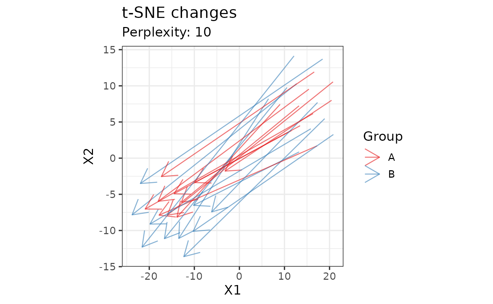
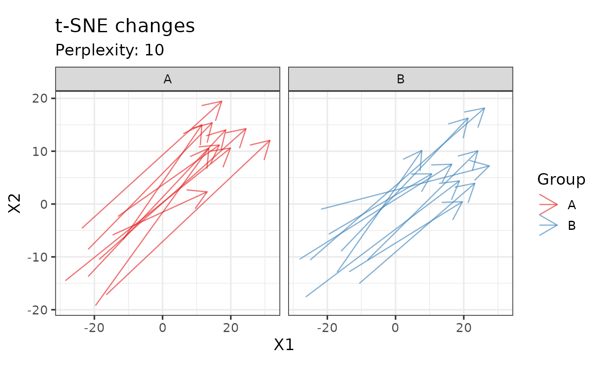

Computes t-SNE into two dimensions and plots changes according to time.
All the observations of a single subject are connected by an arrow ending at
the last observation. In case there are missing values, PCA is performed
using the nipals method of pca, the method can be
changed to "ppca" if nipals fails.
Usage
plot_tsne_arrows(
object,
all_features = FALSE,
center = TRUE,
scale = "uv",
perplexity = 30,
pca_method = "nipals",
color,
time,
subject,
alpha = 0.6,
arrow_style = arrow(),
title = "t-SNE changes",
subtitle = paste("Perplexity:", perplexity),
color_scale = getOption("notame.color_scale_dis"),
text_base_size = 14,
line_width = 0.5,
assay.type = NULL,
...
)Arguments
- object
a SummarizedExperiment or MetaboSet object
- all_features
logical, should all features be used? If FALSE (the default), flagged features are removed before visualization.
- center
logical, should the data be centered prior to PCA? (usually yes)
- scale
scaling used, as in
prep. Default is "uv" for unit variance- perplexity
the perplexity used in t-SNE
- pca_method
the method used in PCA if there are missing values
- color
character, name of the column used for coloring the points
- time
character, name of the column containing timepoints
- subject
character, name of the column containing subject identifiers
- alpha
numeric, value for the alpha parameter of the arrows (transparency)
- arrow_style
a description of arrow heads, the size and angle can be modified, see
?arrow- title, subtitle
the titles of the plot
- color_scale
the color scale as returned by a ggplot function
- text_base_size
the base size of the text
- line_width
the width of the arrows
- assay.type
character, assay to be used in case of multiple assays
- ...
additional arguments passed to
Rtsne
Value
A ggplot object. If density is TRUE, the plot will
consist of multiple parts and is harder to modify.
Examples
data(example_set)
plot_tsne_arrows(drop_qcs(example_set), perplexity = 10, color = "Group",
time = "Time", subject = "Subject_ID")

# If the sample size is large, plot groups separately
plot_tsne_arrows(drop_qcs(example_set), perplexity = 10, color = "Group",
time = "Time", subject = "Subject_ID") +
facet_wrap(~Group)
